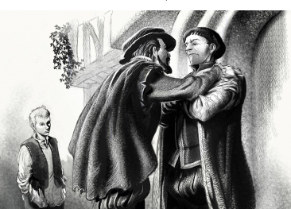

Listen to Part 1:
Hendon Hall
Miles và Edward rời khỏi tư dinh thẩm phán rất nhanh.
Edward hỏi, "Bây giờ chúng ta đi đâu vậy?"
Miles nói, "Về nhà của tôi". Về Hendon Hall!"
Edward vừa mệt vừa đói. Edward thích ý tưởng này.
Edward nói, "Được thôi!" Chúng ta sẽ tới Hendon Hall! Chúng ta sẽ nghỉ ngơi rồi quay lại cung điện'."
Họ rảo bước ra khỏi London, tiến vào vùng ngoại ô. Họ băng qua cánh đồng, xuyên qua những khu rừng và đi ngang qua rất nhiều ngôi nhà xinh xắn. Họ nghỉ lại qua đêm trong một khách sạn nhỏ. Họ tiếp tục hành trình vào sáng hôm sau và chẳng mấy chốc họ tới Hendon Hall.
Miles nói, "Đây là Hendon Hall, thưa đức vua! Gia đình tôi sẽ rất vui khi thấy tôi. Họ cũng sẽ rất yêu quý ngài. Ngài thấy không, lâu đài lớn đến mức nào. Có tới bảy mươi phòng đấy!"
Miles rất vui khi được nhìn lại ngôi nhà cũ sau bao nhiêu năm xa cách. Họ bước lên con đường dài dẫn đến lối vào.
Listen to Part 2:
Edward hỏi, "Có gì thay đổi không?"
Edward thấy ngôi nhà nhỏ lắm.
Miles mỉm cười và gõ cửa lớn, cũ kỹ. Họ đợi nhưng không thấy ai tới.
Edward nói, "Gõ thêm lần nữa đi!"
Miles gõ cửa. Họ lại đợi một lúc nữa rồi cánh cửa mở ra.
Người đàn ông mở cửa trông giống Miles nhưng trẻ hơn. Miles mỉm cười chào anh ta. "Xin chào! Em trai Hugh của anh! Sau bao nhiêu năm dài xa cách! Anh nhớ em lắm!"

Nhưng Hugh không cười. Hugh nói, "Anh không biết anh là ai".
Miles hỏi, "Ý em là sao?" Miles không hiểu. "Anh là anh trai của em! Anh đã đi xa nhiều năm. Anh bị bắt làm tù binh nhưng hiện tại anh đã được thả về và trở về nhà!"
Edward không thích gương mặt của Hugh. Nó không thân thiện và lạnh lùng. Hugh nói, "Anh không phải là Miles". Hugh rất nghiêm túc. "Vài năm trước, em có nhận được một lá thư. Lá thư nói rằng Miles đã chết trong chiến tranh ở Pháp".
Listen to Part 3:
Miles rất ngạc nhiên.
Miles nói, "Không đúng! Không phải vậy! Anh ở đây! Anh còn sống!"
"Anh trai em đã chết! Anh thậm chí còn không giống anh ấy", Hugh đáp.
Miles hét lên, "Không thể nào!" Cha anh... bố chúng ta đâu? Bố sẽ nhận ra anh".
Hugh nói, "Bố thì mất cách đây hai năm".
Miles nói, "Ôi, không", rồi cúi gằm mặt trong một hồi lâu. Miles rất buồn và muốn khóc. Edward hiểu được cảm giác đó.
Miles hỏi một cách khẽ khàng, "Người yêu anh, tiểu thư Edith đâu rồi?" Cô ấy sẽ nhận ra anh".
Hugh nói đầy giận dữ, "Đừng có nhắc tới tiểu thư Edith!" Cô ấy là vợ của tôi!"
Vợ của anh sao?" Miles hỏi. Không thể nào! Anh là người sẽ cưới tiểu thư Edith!"
Hugh hét lên, "Im đi!" Anh không phải anh trai tôi! Tôi sẽ lấy tiểu thư Edith nhưng cô ấy sẽ không bao giờ quen anh!"
Listen to Part 4:
Hugh đi vào rồi quay trở ra cùng với một người phụ nữ rất đẹp. Cô ấy chậm rãi bước đi và nhìn xuống sàn nhà. Cô ấy trông rất buồn.
Miles nói, "Edith của anh!" Anh đã chờ đợi em lâu lắm!" Miles chạy về phía tiểu thư Edith nhưng Hugh ngăn Miles lại.
Cuối cùng, tiểu thư Edith cũng nhìn về phía Miles. Cô ấy nói, "Tôi không biết anh là ai". Khuôn mặt cô ấy tái nhợt và không hề biểu lộ cảm xúc. Edward nghĩ rằng cô ấy sắp khóc mất rồi.
Miles đáp, "Edith!" Là anh đây! Em biết anh mà!" Miles tin Hugh đã ép cô ấy phải nói như vậy. Miles rất buồn vì chàng yêu cô ấy.
Cô ấy lặp lại, "Tôi không biết anh là ai" rồi chạy ra khỏi phòng.
Hugh nói, "Anh thấy chưa, vợ tôi không biết anh. Bọn lính sắp đến rồi. Họ sẽ áp giải anh tới nhà tù! Đừng có mà toan bỏ chạy".
Miles đáp, "Đây là nhà của anh". Anh sẽ không rời đi".
Ngay lúc đó, bốn tên lính cường tráng tiến đến áp giải Miles và Edward tới nhà tù.